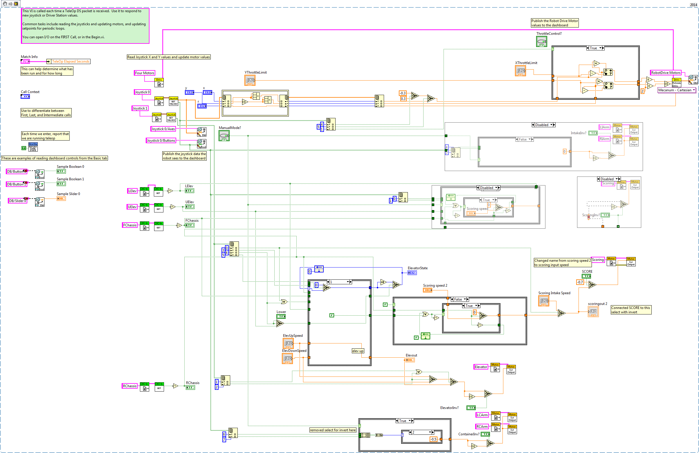
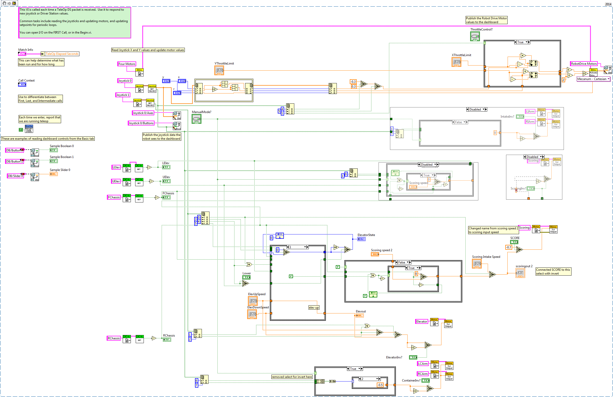
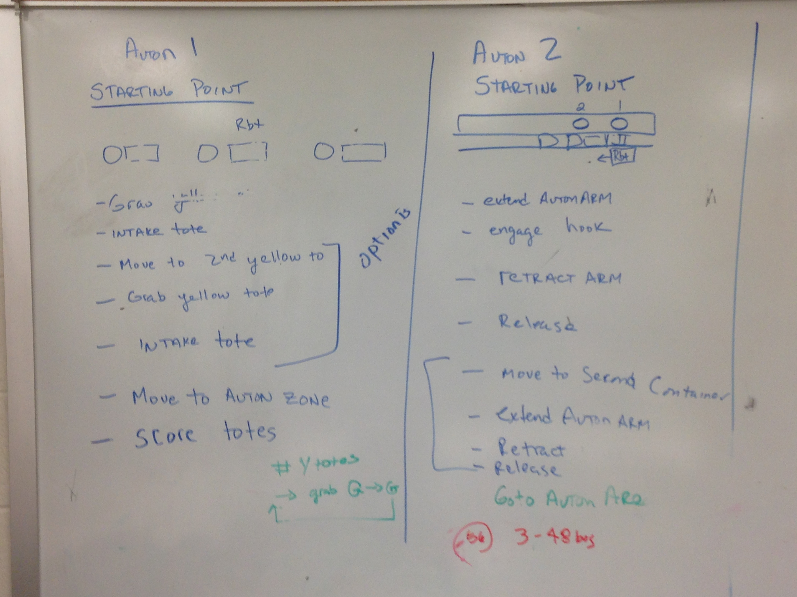
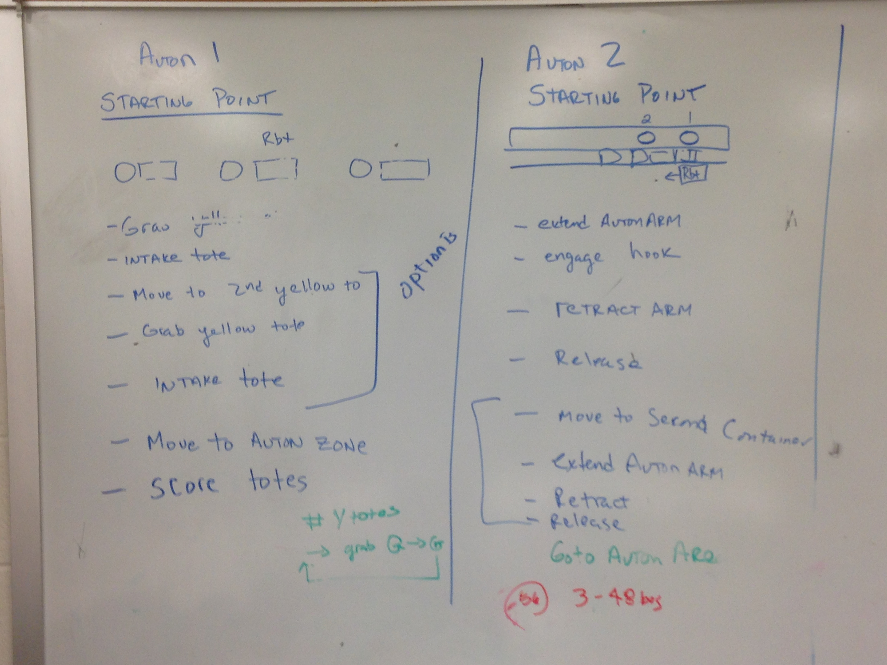

This year's robot features semi-autonomous function
It will raise the elevator when a tote is detected in front
The only co-pilot control for the 297 robot is telling it when the last tote is coming in
The 302 robot's co-pilot only is needed in a jamming situation where they can raise or lower the elevator manually
The elevator has programmed soft stops at the top and bottom
Elevator controls never allow it to go past the stops
All subsystems (except the drive) are controlled by state machines
Autonomous routines are generated through text files
Files are easy to create and then load onto the robot using FileZilla (an FTP client/server)
The robot can be moved with just one line of code--and using sensor feedback-- very accurately
 

Ashtyn Carvalho
Josh Baker
Becca Roughton
Tucker Thomas
Eldon Maffey
Derek Witcpalek
""